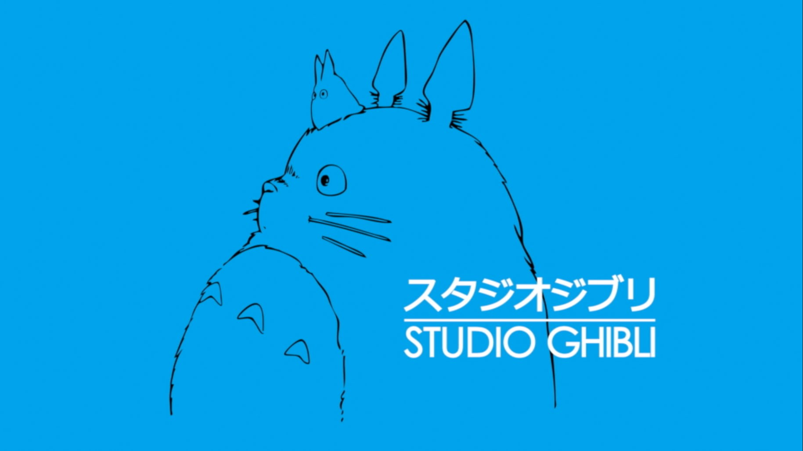

El Nacimiento de Studio Ghibli
En los años 80, en una tranquila ciudad japonesa, cuatro visionarios de la animación, Hayao Miyazaki, Isao Takahata, Toshio Suzuki y Yasuyoshi Tokuma, se unieron con un sueño común: crear un estudio de animación que redefiniera el arte animado en Japón y en el mundo entero. Su visión era ambiciosa: querían fusionar la rica tradición de la animación japonesa con técnicas de narración y animación innovadoras, creando películas que fueran tanto visualmente impresionantes como profundamente conmovedoras.
Mientras tanto, en un remoto pueblo colombiano rodeado de exuberante naturaleza y arraigadas tradiciones, una joven llamada María descubría su propia pasión por el arte y la creatividad. Criada en un entorno donde las historias fantásticas y los cuentos de hadas se transmitían de generación en generación, María creció con un profundo aprecio por la imaginación y la magia que se desataban en las películas animadas.
Aunque María nunca había oído hablar de Studio Ghibli, el espíritu de creatividad y exploración que animaba a los fundadores del estudio resonaba en su propia búsqueda de expresión artística. Inspirada por las historias locales y la maravillosa naturaleza que la rodeaba, María pasaba horas dibujando y creando, soñando con un día poder compartir sus propias historias con el mundo.
Mientras Studio Ghibli se establecía y comenzaba a dejar su huella en la industria de la animación japonesa con obras maestras como "Mi Vecino Totoro" y "La Princesa Mononoke", María continuaba explorando su pasión por el arte y la creatividad en su rincón remoto del mundo. Aunque no sabría si en algún momento sus caminos se cruzarían, el legado de innovación y calidad artística dejado por Studio Ghibli influyó profundamente en el propio viaje creativo de María, cuyo destino estaba lleno de posibilidades mientras seguía explorando su arte y su conexión con el mundo que la rodeaba.
Detalles de María Samayoa
Ascendencia: Colombiana y japonesa
Se enamoró a los 30 años de un japones
Ganó varios premios por su arte